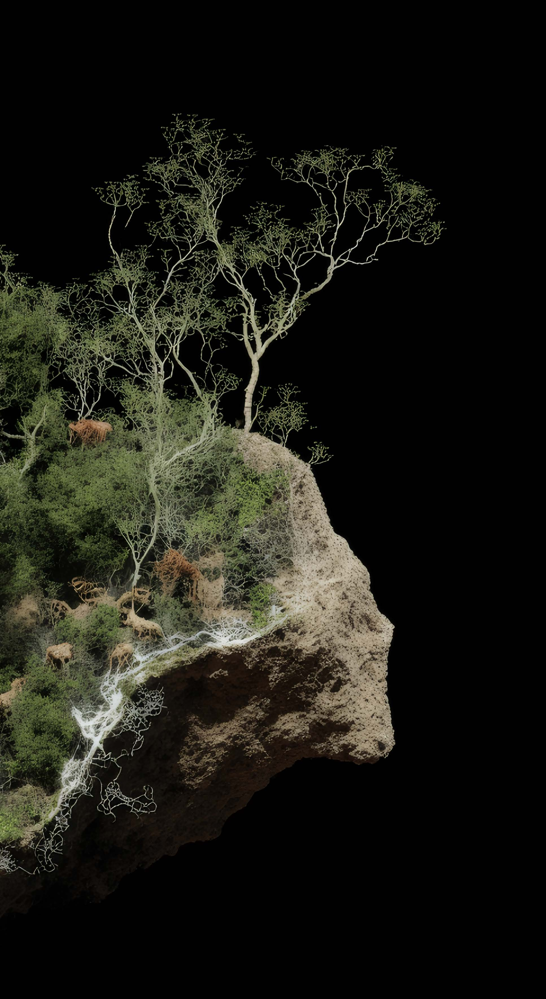
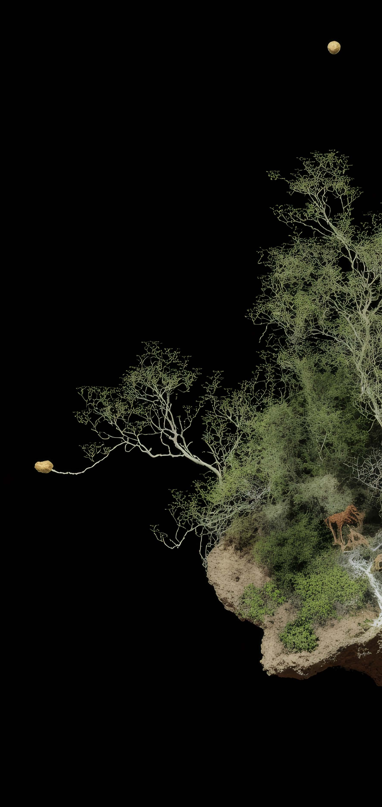
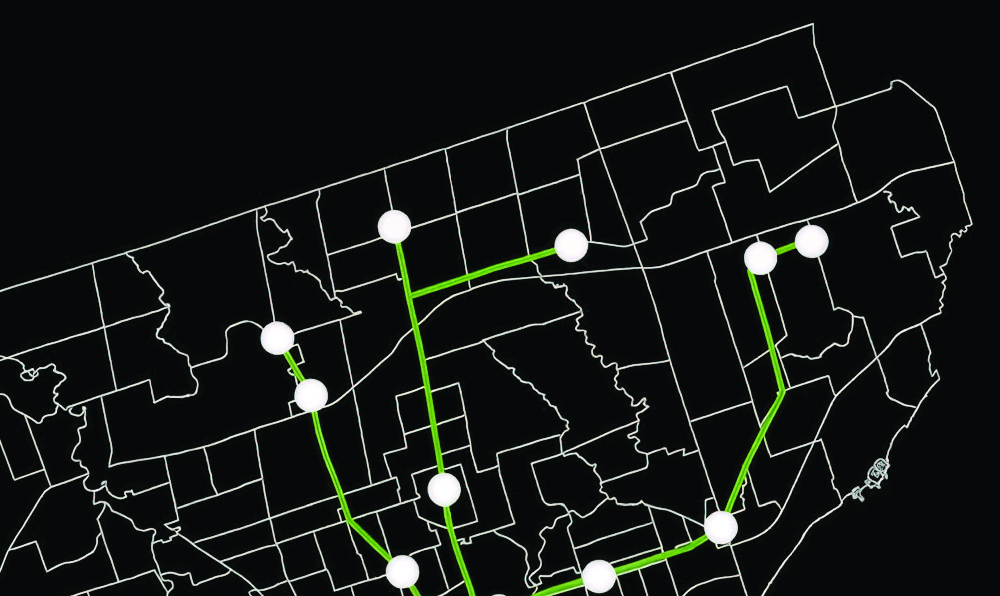
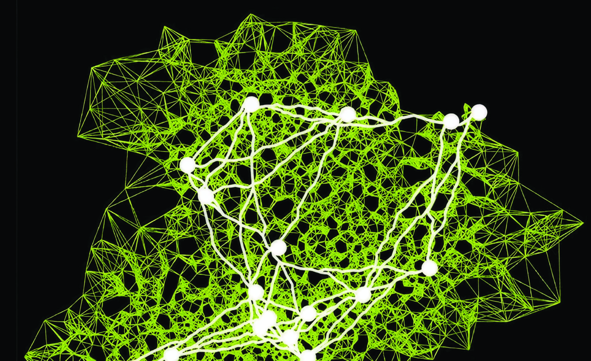

עקרונות הארכיטקטורה המרחבית של פטריות ועובש הפיזארום ביערות העד, כמודל לחידוש הקישוריות וההשתלבות בין האדם לטבע ובין האדם לעצמו. The spatial architecture principles of fungi and physarum slime mould in primeval forests — as a model for renewing connectivity and integration between humans and nature, and between humans and themselves.


היום, אנו מבינים שהיער הוא לא רק אסופת עצים וחיות, אלא אורגניזם חי שמבצע החלטות ומכלכל את עצמו ואת כל חלקיו ממש כמו שאנחנו דואגים לאכול ולשתות. We now understand that the forest is not merely a collection of trees and animals, but a living organism that makes decisions and sustains itself and all its parts — just as we care to eat and drink.
עצים בצד אחד של היער דואגים לעצים בצד שני של היער דרך רשת סבוכה של מתווכים ובראשן הפטריות. להן רשת תקשורת מורכבת הנקראת בקהילה המדעית: Wood Wide Web. Trees on one side of the forest care for trees on the other side, through an intricate network of mediators — chief among them, fungi. They form a complex communication network the scientific community calls the Wood Wide Web.
ב־2015 נעשה ניסוי בטוקיו, יפן — עובש הפיזארום שרטט ותכנן את רשת הרכבות העירונית, ופתר בעיות תכנוניות בצורה שבמקומות מסוימים השתוותה למהנדסים ועקפה אותם: רשת יציבה, דינמית, ויעילה. In 2015, an experiment in Tokyo, Japan — physarum slime mould drew and planned the city's subway network, solving planning problems in ways that, in places, matched and surpassed the engineers: a stable, dynamic, efficient network.
ב־2022 הצליח מרצה באוניברסיטת הארוורד בשם Raphael Kay לתרגם את לוגיקת הפיזארום לקוד — ניתן להריץ כמה שרוצים, באילו תנאים שנבחר. In 2022, a Harvard lecturer named Raphael Kay translated physarum's logic into code — runnable any number of times, under whichever conditions we choose.
רפאל חלק איתי את הקוד שיצר. אני שילבתי אותו עם פיתוח שלי המתרגם את קבלת ההחלטות של עובש הפיזארום לשפה ויזואלית. Raphael shared the code with me. I integrated it with my own development that translates physarum's decision-making into a visual language.


Physarum engine runs the Kay / Mattacchione algorithm — source code shared by Raphael Kay, Harvard.
בעזרת חוויה אימרסיבית, רגשית, חזקה ומעמיקה אני רוצה לחשוף את הקשר הבלתי פוסק של בני האדם למערכת המקיימת של הטבע — ולהזכיר לנו שזו לא ישות זרה שאנחנו צריכים לשמור עליה, אלא שאנו הישות הזו, יחד עם כל האורגניזמים שאיתם אנו חולקים את העולם הזה. Through an immersive, emotional, powerful and profound experience, I want to reveal the unbroken connection between humans and the living system of nature — and to remind us that it is not some foreign entity we must protect, but that we are that entity, together with all the organisms with whom we share this world.